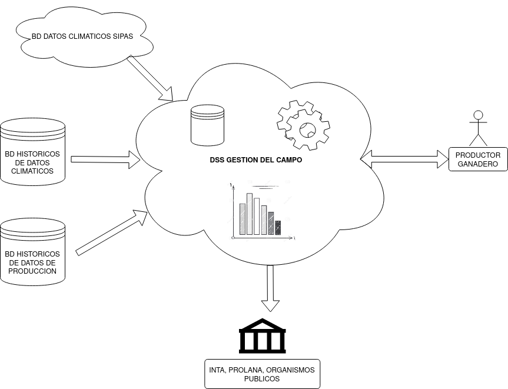
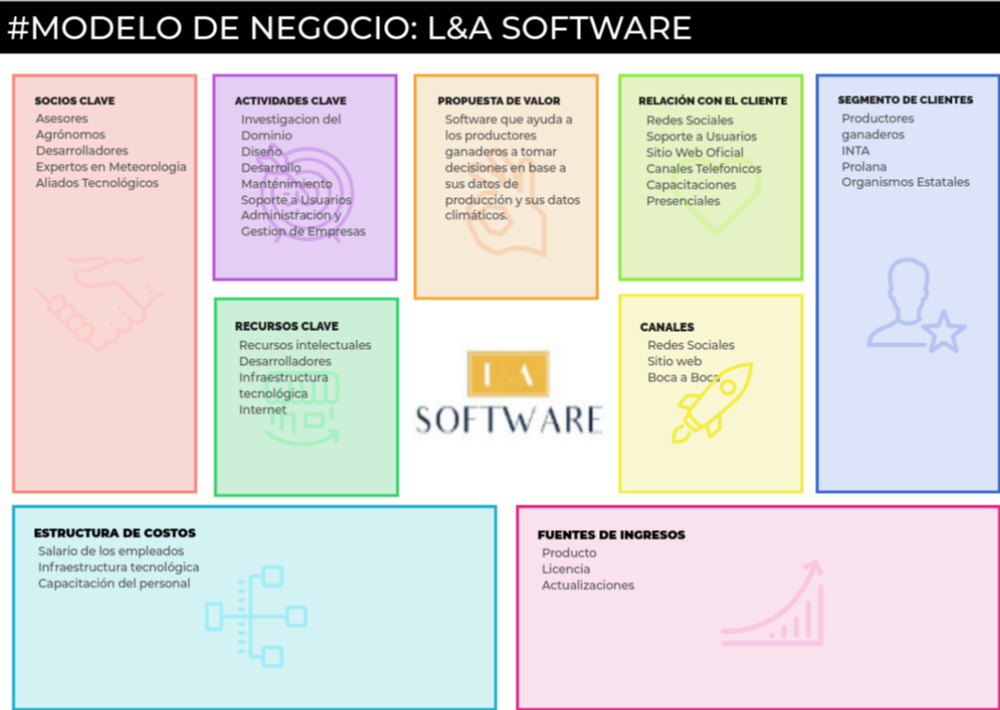

Marco Teorico
Contenido
Marco Teorico¶
Introducción¶
La Provincia del Chubut es la provincia con mayor cantidad de ovinos y de productores ganaderos dedicados a la cría ovina del país y aunque este producto ha perdido importancia relativa desde la aparición de las fibras sintéticas en sustitución de la lana, es aún hoy una actividad considerable (Chubut, 2021) (Ministerio de Producción Chubut, 2017). En términos demográficos, Chubut posee la menor densidad de población de Argentina (Instituto Nacional de Estadística y Censos, 2010), esto sumado a condiciones ambientales adversas (bajas temperaturas, vientos, escasas lluvias, desertificación de campos, clima árido a semiárido) hacen que el desarrollo de actividades ganaderas en comunidades de pequeños y medianos productores se vea seriamente limitado en su crecimiento. Las actividades ganaderas que se llevan a cabo, se realizan de manera tradicional y aún hoy cuentan con una escasa o nula incorporación de tecnologías de uso corriente en las ciudades y otras áreas rurales del país como por ejemplo telefonía rural, energías alternativas, tanto eléctrica como eólica, que afectan problemas de calefacción, comunicación, seguridad, acceso a mercados, gestión de empresas, indumentaria rural, y acceso a la salud. Asimismo, la ejecución de las políticas del sector agropecuario en Chubut se apoya principalmente en soporte de papel, sin registro electrónico, y a pesar de que, durante el último tiempo hubieron intentos de incorporación de tecnología que mostraron la factibilidad de diversas tareas (Barry Cortez et al., 2017), no se materializaron en decisiones políticas, por lo tanto han permanecido con idéntica gestión durante los últimos años (Ministerio de Producción Chubut, 2017). A nivel mundial, el uso de tecnología informática y electrónica en el ámbito agropecuario se ha establecido como una necesidad para optimizar la producción y forma parte del denominado paquete tecnológico habitual en grandes escalas productivas. No obstante, en la actualidad persiste el auge en la investigación en estas temáticas, generando conocimiento, a partir de diferentes estrategias de aplicación ámbito agropecuario, tanto de Big Data (Kamilaris 2017), inteligencia artificial e Internet de las Cosas (Subeesh 2021), como de soporte para la toma de decisiones (Kukar 2019) hasta la denominada Agricultura 4.0 (Zhai 2020). Por otro lado, en el dominio de la producción ganadera y su relación con el clima en producciones de baja escala existen experiencias en Kenia (Brandt 2017), Pakistan (Ahmed 2018) y Grecia (Vouraki 2020), entre otros. En base a lo anterior, el objetivo de este trabajo es presentar una propuesta de incorporación de tecnología informática, para productores ganaderos de baja escala de la región Patagónica Argentina, la cual propenda a la toma de mejores decisiones, basadas en la recolección de pocos datos, provocando una adopción satisfactoria de la misma. El resto del trabajo se organiza de la siguiente manera: luego de esta introducción, en la sección Contextualización, se describe el dominio de aplicación en el que se enmarca la propuesta; la sección Requerimientos del Sistema establece las características deseadas que debe contener la propuesta a desarrollar, tanto funcionales como no funcionales; en la sección Modelo de Negocio, se elabora de forma integral una propuesta de valor para satisfacer los requerimientos establecidos, desde el punto de vista de un emprendimiento económico, identificando las principales aristas del mismo; en sección Trabajos Relacionados, se sintetizan algunos desarrollos comerciales similares en contraste con la propuesta elaborada en este trabajo; finalmente, en la sección Conclusiones se exponen los aprendizajes y reflexiones obtenidos a partir del trabajo.
Contextualización¶
El Problema del Clima en Chubut¶
La mayor parte de la geografía chubutense es una zona con un clima predominante templado-frío-ventoso y con escasas precipitaciones a lo largo del año (Chubut, 2021). Estas condiciones ambientales caracterizan al área como marginal para la producción ovina, actividad de elevado riesgo si se consideran además los eventos climáticos extremos y cíclicos de sequía, temporales y nevadas (Sturzenbaum 2013). En cuanto a las consecuencias, suele considerarse en estudios científicos o técnicos que las sequías generan tanto la reducción del forraje (con impactos variables según la intensidad, frecuencia y/o duración del fenómeno); como de las provisiones de agua para la población y los animales (Garcia Martinez et al., 2017). En relación a la ganadería, ambas cuestiones perjudican la productividad, disminuyendo la cantidad de kilos de lana y carne obtenidas en un ciclo productivo. Cuando la intensidad del fenómeno es profunda o se extiende en el tiempo, afecta la condición corporal de los animales llegando a provocar su muerte o la de sus corderos, la disminución de los niveles de preñez y por ende de pariciones. Estas pérdidas generan dificultades para la reposición del ganado perdido, lo que gradualmente lleva al envejecimiento de la hacienda. Como consecuencia, se puede producir la descapitalización de los productores, o el deterioro en sus ingresos, siendo difícil la posterior recuperación durante los siguientes ciclos productivos (Ejarque, 2020). Por lo tanto las condiciones climáticas afectan directamente a la productividad del pastizal y animal de los sistemas ganaderos extensivos, generando una cierta inestabilidad productiva y económica a las empresas ovinas (Sturzenbaum y Dr. Andrade, 2012). La degradación generalizada que se observa en la zona tanto de los pastizales como del suelo, en gran parte originada por un manejo inadecuado, constituye el principal problema ecológico productivo de la región (Centro Regional Patagonia Sur - INTA, 2015). Sin embargo, la sequía tuvo una importante relevancia debido a que generó alteraciones en los medios de vida. En función de sus consecuencias, en el ámbito de la producción y del trabajo, expertos sostuvieron la importancia de modificar las formas de producción de los ganaderos, para que se puedan “adaptar” a las sequías, que son “recurrentes” y que, con esas medidas, sus efectos sean menos notorios. Propusieron tecnologías y prácticas de manejo que permitieran generar menores consecuencias negativas en lo productivo, como la realización de diagnósticos de los animales, ajuste de carga, pariciones controladas, traslados hacia zonas con mayores pasturas (Ejarque, 2020). Estas tecnologías permiten realizar un uso sustentable de los recursos naturales y un incremento en la eficiencia de producción, sin embargo la adopción de estas tecnologías está muy lejos de ser generalizada. La esquila preparto, tecnología que permite un incremento en el número de corderos señalados y mejoras en la calidad de la lana, ha logrado una mediana adopción (menor a 50%) al igual que PROLANA (esquila desmaneada, clasificación y acondicionamiento de lana y mejor precio de la misma). Sin detallar cada una de las tecnologías disponibles y su nivel de adopción predial, se puede decir, que en términos generales, el uso de las tecnologías probadas que permiten incrementar la productividad de la ganadería, mejorar la calidad de los productos primarios resultantes de la actividad, y generar impacto y estabilidad a los sistemas, no está generalizado, ya sea por cuestiones culturales, económicas, políticas o de estrategia de intervención (Iglesias y otros, 2015).
El Problema de la Adopción de tecnologías informáticas¶
Actualmente las organizaciones tienen la necesidad de ser más competitivas y tener información real disponible para la toma de decisiones, se requiere de herramientas orientadas a disminuir el tiempo al momento de tomar una decisión, generar información confiable para poder tomar decisiones correctas, disminuir costos, aumentar productividad y conducir a múltiples análisis de ¿qué pasa si…? Los sistemas que hoy apoyan el proceso de toma de decisiones están orientados a los altos ejecutivos y personas que tienen esta responsabilidad dentro de la organización, estos son conocidos como DSS (Decisión Support System), EIS (Executive Information Systems) y numerosos sistemas expertos que cada día proveen información en tiempo real, de manera gráfica y resumida a sus usuarios finales (Díaz y Arturo, 2006). En la provincia del Chubut las personas que se dedican a la producción agropecuaria, basan generalmente su actividad en la ganadería ovina extensiva. De un total de 4.089 Unidades Ganaderas (UG), un 37 % de los productores se encuentra en los departamentos de Cushamen y Gastre, y el 10% se encuentran en el Valle Inferior del Río Chubut (Hermosilla Rivera Cristian, 2013). El 80% de los productores chubutenses tienen menos de 1.000 ovinos; lo cual refleja un sector productor de muy baja escala. Por otro lado, la mayor cantidad de ovinos se ubica en los departamentos de Tehuelches y Río Senguer, donde se concentra el 31% de la existencia de ovinos del Chubut. Desde el punto de vista de la capacidad de gestión para la toma de decisiones, y tomando como unidad mínima un establecimiento con 3.000 animales, se observó en una encuesta que el 94% de los productores en Chubut tienen una baja capacidad de tomar decisiones (Ministerio de Producción Chubut, 2017). Se sabe que la apropiación de sistemas como los DSS en la agroindustria es lenta y baja, debido a la complejidad que perciben sus usuarios, las pocas estrategias de adopción y a la necesidad de modificar patrones de conducta. Hay quienes agregan que, como consecuencia de no usar Tecnologías de la Información (TI) en los sistemas se generan errores o retrasos en las decisiones, desconocimiento de las pérdidas o ausencia de utilidades, desestimación o abandono y por ende migración a las ciudades. Aunque la presencia de las TI facilita controlar procesos organizacionales al otorgar información para mejorar la eficiencia del proceso, en el sector ganadero, además de ello, agrega valor al brindar la posibilidad de trazabilidad desde la gestación del animal hasta la venta o consumo de los productos (Urbano et al., 2019).
Propuesta de Solución¶
Para poder enfrentar los dos problemas planteados inicialmente, se pensó en desarrollar un DSS pasivo que a diferencia de un sistema activo, es un modelo que ayuda en el proceso de toma de decisiones pero no puede llevar a cabo una decisión explícita, sugerencias o soluciones. El sistema está pensado para ser utilizado por el dueño del campo, que es el único rol identificado. A partir de este rol se pudieron obtener los siguientes requerimientos, en formato de Historias de Usuario (Patton y Economy, 2014), los cuales fueron validados por un usuario real:
Como dueño del campo, quiero cargar todos los datos de producción sobre mi campo, para estimar producciones futuras y correlacionarlos con otros datos.
Como dueño del campo, quiero acceder al historial meteorológico de la zona, para correlacionarlo con mis datos de producción.
Como dueño del campo, quiero ir a un año del pasado, para saber qué pasó con el clima y cómo repercutió en mi producción.
Como dueño del campo, quiero saber cuál fue mi mejor año, en base a variables de interés, para tratar de establecer las condiciones que permitan replicar esa situación.
Como dueño del campo, quiero estimar el volumen de precipitaciones, para saber qué medidas tomar respecto a la producción.
Como dueño del campo, quiero establecer puntos de control críticos en la producción, para evitar o revertir un manejo inadecuado de la producción.
Como dueño del campo, quiero registrar los datos de mi campo, para hacer estimaciones productivas.
Este DSS ofrece un conjunto reducido de las funcionalidades requeridas por el usuario, acompañando los resultados con información gráfica que permite una rápida interpretación y favorece una futura toma de decisiones por parte del usuario final. En términos funcionales, éste DSS es suministrado con información productiva y meteorológica perteneciente al campo de un productor determinado. Para los datos productivos, el productor debe suministrar los siguientes datos al sistema:
Variable |
Descripción |
|---|---|
Mortandad |
Indica la cantidad de animales que murieron. |
Kilos de lana |
Indica la cantidad de kilos de lana esquilados de todos los ovinos. |
Rinde de la lana |
Indica el porcentaje de peso de la lana limpia sobre el peso de la lana sucia. |
Finura de la lana |
Indica el diámetro medio de la fibra de lana. |
Cantidad de ovejas |
Indica la cantidad de ovinos que el productor tiene en existencia. |
Cantidad de corderos |
Indica la cantidad de corderos que el productor tiene en existencia. |
Cantidad de pariciones |
Indica la cantidad de animales que nacieron. |
En cuanto a los datos climáticos, el productor cuenta con la posibilidad de utilizar datos suministrados por sondas climáticas pertenecientes al INTA en la medida en que su campo se encuentre situado en cercanías de las sondas mencionadas; en caso contrario el productor debe suministrar los siguientes datos climáticos al sistema:
Variable |
Descripción |
|---|---|
Temperatura mínima |
Indica la temperatura mínima de una zona geográfica. |
Temperatura media |
Indica la temperatura media de una zona geográfica. |
Temperatura máxima |
Indica la temperatura máxima de una zona geográfica. |
Humedad |
Indica la humedad de una zona geográfica. |
Velocidad viento |
Indica la velocidad del viento de una zona geográfica. |
Velocidad maxima viento |
Indica la velocidad máxima del viento de una zona geográfica. |
Dirección del viento |
Indica la dirección del viento de una zona geográfica. |
Mm de lluvia |
Indica la cantidad de milímetros de lluvia acumulada de una zona geográfica. |
Radiación solar |
Indica la radiación solar de una zona geográfica. |
Una vez suministrado el sistema con datos productivos y climáticos el productor contará con la posibilidad de responder a preguntas del tipo “que tan bien o mal me ha ido en un año determinado” teniendo en cuenta todas las variables productivas mencionadas anteriormente. A diferencia de los sistemas predominantes en el mercado, este desarrollo apunta a la rapidez de interpretación de datos históricos con gráficos resumidos y descriptivos, con una interfaz de usuario minimalista y a la vez amigable sobre todo orientada a usuarios poco afines al uso de tecnologías. Se trata de una aplicación web, que se despliega en cualquier navegador, y le permite a los productores tener al alcance de la mano información proveniente de muchos años de relevamiento resumida en gráficos y tablas de rápida interpretación. En el siguiente gráfico, se podrá apreciar la arquitectura de la misma desde un alto nivel.

El sistema es alimentado por el usuario dueño del campo, con datos de su producción ganadera y datos climáticos, ambos, registrados históricamente, de esta manera el sistema podrá ofrecerle información resumida y gráficos acerca de cuál ha sido su mejor año contrastado con distintas variables de interés Además el sistema recolecta datos históricos climáticos ofrecidos por el SIPAS (INTA) pertenecientes a sondas climáticas distribuidas por toda la provincia del Chubut, esta información climática es ofrecida al usuario para que, en caso de que el mismo no cuente con su propio dataset de información, pueda utilizarla como datos climáticos válidos para el funcionamiento del sistema. Por otro lado, el sistema ofrece la opción de realizar una estimación a corto plazo de la lluvia y la temperatura esperadas basado en modelos de inteligencia artificial utilizando los datos climáticos del usuario. El modelo de estimación utilizado se denomina Modelo Autorregresivo Integrado de Media Móvil (ARIMA), (Kotu, 2018), el cual trabaja con datos en forma de series temporales y para que su rendimiento sea el más óptimo los datos tienen que ser estacionales o cíclicos; este predictor será entrenado para cada sonda del INTA, y en el caso de que los usuarios carguen sus propios datos climáticos se deberá entrenar para cada uno de ellos. Este modelo de inteligencia artificial es utilizado en predicción de precios forestales (Broz y Viego, 2014) estimación de la producción de leche (Sánchez y otros, 2014), vigilancia de enfermedades transmisibles (Marie, 2007) y predicción climática (Aguado-Rodríguez y otros 2016) Además la información procesada del sistema podrá ser utilizada por organizaciones como INTA, PROLANA y demás organismos públicos para sus propios fines. El sistema propuesto pretende ser un complemento para las nuevas tecnologías ganaderas anteriormente mencionadas, con él se podrá obtener información procesada y resumida que sea apta para tomar decisiones frente a situaciones que requieren contar con previsibilidad evitando problemas a futuro. Se sabe que las lluvias no predominan en la zona, pero saber cuánto y cuándo exactamente llovió puede darle herramientas al productor para tomar decisiones de gestión anticipadas, mejor planificadas y que afecten positivamente a la producción. Al tener la posibilidad de mirar retrospectivamente la información meteorológica y de producción ordenada, el productor puede ver cuál ha sido el comportamiento de sus variables de producción en años anteriores y contar con la posibilidad de realizar comparaciones entre distintos años y de esta manera por ejemplo encontrar un año donde las precipitaciones acumularon la misma cantidad de milímetros, o donde se obtuvo el mejor rinde. Este conjunto de información le permitirá al productor conocer:
Si es necesario comprar suplementos o no. En caso de tener que hacerlo, puede saberlo con anticipación y por lo tanto conseguirlo a un precio más rentable debido a que no es la temporada de mayor demanda.
Si conviene o no largar los carneros a la majada.
Si es necesario llamar a un veterinario que le sugiera medidas sanitarias a tomar con sus animales.
Si es necesario reducir o aumentar la carga animal presente en el campo en un determinado momento.
Con este desarrollo el productor puede lograr sobreponerse a las inclemencias climáticas de la región, logrando estimar valores de lluvia y temperaturas cercanos a los reales y, de esta manera, tomar mejores decisiones productivas teniendo en consideración las variaciones climáticas de la zona.
Modelo de negocios¶
El desarrollo de tecnología para un segmento de mercado tan pequeño y particular como el descrito aquí, requiere un análisis integral, a fin de que la propuesta de solución sea genuinamente apropiada por los destinatarios y sustentable en términos económicos, así como respecto a las funcionalidades que ofrece. En este sentido, se toma el enfoque de Business Model Canvas (Osterwalder y Pigneur, 2011), con el objetivo de modelar las entidades, actividades, flujos y demás factores intervinientes en una materialización de la propuesta de valor. En virtud de que este trabajo se enmarca en la categoría de Proyecto Tecnológico, en orden de alcanzar completitud en la propuesta del Business Model Canvas y articular acciones de educación en la innovación (Luna, 2020), se presenta el desarrollo llevado adelante por la empresa imaginaria L&A Software.

Los bloques del tablero canvas resumen las siguientes características:
Propuesta de valor. Como propuesta de valor tenemos una aplicación web que ayuda a los ganaderos a tomar decisiones en base a sus datos de producción y sus datos climáticos. Además de estar pensada como una herramienta informática de ayuda a la gestión productiva de un campo, este sistema puede verse como una posible fuente de datos para distintos organismos que posean algún tipo de interés en la información almacenada y procesada por el mismo, logrando así aumentar el valor de su estructura funcional y colaborar en la elaboración de políticas públicas.
Segmento de clientes. Es importante remarcar el amplio abanico de clientes que existen y que aumentan el valor de producir un sistema con estas características; no solo los usuarios productores de campo sino otros como organismos públicos o privados son los que ofrecen la oportunidad de dar un valor agregado a la información contenida en el sistema. Particularmente los clientes del sistema podrían ser productores ganaderos que requieran algún tipo de ayuda o soporte a la toma de decisiones productivas en base a sus datos, y que quieran tener su información organizada de forma simple. Además se identifican otras instituciones que pueden verse como clientes tales como INTA, PROLANA, u organismos estatales que deseen tener acceso a la información almacenada en el sistema.
Canales. Los canales que nos permitirían llegar a nuestros clientes serían el boca a boca, la comunicación mediante una página web oficial de la aplicación y la creación de perfiles en redes sociales para promoción y acercamiento con los posibles clientes finales. Relación con el cliente. Para establecer una correcta comunicación con nuestros clientes, estar al pendiente de sus inquietudes y forjar una relación de confianza, se ofrecerá soporte a los usuarios a través de redes sociales y la página web oficial, así como el tradicional canal telefónico y capacitaciones presenciales.
Socios clave. Los socios clave identificados son en primera instancia los desarrolladores para diseñar, programar y mantener la aplicación. También es posible identificar asesores agrónomos los cuales poseen información acerca del nicho de mercado al que podría estar dirigido el sistema y sobre los cuales identificar casos de uso específicos y relevantes para el desarrollo de la aplicación. Otros socios podrían ser expertos en meteorología. También serán necesarios aliados tecnológicos, que aporten infraestructura o plataformas, que sean necesarias.
Recursos clave: Dentro de los recursos identificados tenemos nuevamente a los desarrolladores que son el recurso humano-intelectual y además toda la infraestructura tecnológica necesaria que agrupa y organiza el conjunto de elementos tecnológicos que integran el desarrollo y puesta en marcha de la aplicación.
Actividades clave. Como actividades clave debemos investigar el dominio; diseñar, desarrollar y mantener la aplicación web, y también brindar soporte a los usuarios finales una vez que la aplicación se encuentre en funcionamiento. A estas actividades técnicas, se suma la administración y gestión de la empresa.
Costos e Ingresos. En cuanto a los costos y los ingresos identificados podemos detectar que el gasto principal son los desarrolladores y la infraestructura tecnológica, ambos necesarios para la puesta en funcionamiento de la aplicación, junto con los asociados a la creación y administración de la empresa. Por otro lado, la fuente de ingresos económicos principal será la utilización de la aplicación en entornos reales por los usuarios finales con sus respectivos mantenimientos. En este punto se evalúan alternativas de licenciamiento y actualizaciones.
Trabajos Relacionados¶
Los sistemas informáticos que se encuentran en el mercado, sirven para gestionar los campos y están mayormente orientados a las características financieras de la producción, y no tanto a la relación que existe entre el clima y los animales. Algunos ejemplos de aplicaciones informáticas y sus descripciones pueden ser las siguientes: Finnegans GO CERES: sirve para gestionar una empresa ganadera de forma online, ya que es 100% Cloud. Este software te permite controlar los costos de los insumos aplicados y el de las labores que se llevaron a cabo; llevar un seguimiento completo de las actividades ganaderas; tener un mejor control de existencias, entregas, certificaciones y liquidaciones; resolver toda la gestión administrativa: la generación de cuentas corrientes de clientes y proveedores, presentaciones contables y los cálculos e interacciones con el fisco; tener a disposición herramientas de seguimiento para gestionar la trazabilidad de rodeo por tropa e identificación animal; controlar el cumplimiento de planes sanitarios y la disponibilidad de vacunas; llevar un control del inventario de los alimentos y tener información sobre qué se le dio de comer a cada animal y cuánto consumen (Finnegans, s.f.). VISUAL Gestión Agro: es un software desarrollado para windows y está orientado a productores agropecuarios, ingenieros agrónomos, licenciados en administración rural, licenciados en administración de empresas agropecuarias que asesoran a productores, estudios contables que deseen llevar la gestión de empresas agropecuarias y contratistas rurales que deseen llevar el seguimiento y la gestión de las labores realizadas a terceros. Combina diversas tecnologías de información y permiten al productor y a la empresa agropecuaria sistematizar el flujo de datos vinculado con su actividad integrando la información administrativa, contable, impositiva y financiera con las netamente económicas y técnicas de campo, de manera tal que le permitan planear y gestionar con eficiencia (Visualsystemas, s.f.). Ovi Control: es un software para ovinos desarrollado en colaboración con ganaderos y veterinarios del sector; y se trata de un programa muy completo. Entre sus características están: control de reproductoras, control de engorde, administración contable, fiscal y analítica, control económico además permite gestionar varios campos de un mismo usuario. Este sistema genera distintos tipos alertas respecto a los animales, permite hacer comparativas entre diferentes criterios, y además proporciona, mediante informes, todo lo relativo a: destetes, vacunas, envío al matadero, etc. (Innovación Ganadera, s.f). Ovitec: es un programa de gestión de ovinos, disponible para las plataformas Web, Escritorio y Mobile. Sirve como herramienta para la rápida toma de decisiones y posee las siguientes características: panel de control que permite una visión de la granja desde la pantalla principal; hembras reproductoras; trazabilidad de individuos; gestión de engorde; integración con dispositivos móviles compatibles con RFID y lectores de códigos de barras; integración con sistema de alimentación automática; gestión económica; informes de planificación de tareas; registros médicos; transferencia de animales entre sus granjas; exportar historiales de animales a un archivo y luego importar a otra base de datos; permite crear informes a través de múltiples granjas, comparándolas por tipo de granja, región u otro criterio; integración contable que permite la importación desde fuentes de datos externas (Agritec, s.f.). Los anteriores son algunos ejemplos de los sistemas que podemos encontrar en el mercado para gestionar un emprendimiento ganadero. Es destacable que la mayoría de ellos abarcan gran parte de las tareas de gestión de un campo tanto comercial como financieramente, y además permiten llevar una trazabilidad muy detallada de los animales. El sistema propuesto en este trabajo no apunta a ofrecer herramientas comerciales ni financieras para el manejo del campo como tampoco ofrece la posibilidad de llevar una trazabilidad de todos los eventos de la vida de los animales desde que nacen hasta que se venden o mueren, sino que la prioridad es encontrar y hacer visible al usuario final la relación existente entre el clima y los datos de producción obtenidos del campo. La principal idea detrás del desarrollo es que sea un sistema de pocas opciones, contundente a la hora de brindar información clara y específica, y que busca evitar, como primer impresión, una reacción de rechazo al utilizarlo; muchas veces los sistemas que están sobrecargados de tareas que se pueden hacer son evitados por los dueños de los campos debido a que les resulta muy difícil de utilizar.
Conclusión¶
Las zonas áridas o semiáridas tienen bajos niveles de precipitaciones. Más aún, producto de la variabilidad climática, existen períodos secos donde estos niveles de lluvias decrecen por debajo de lo registrado históricamente. Las sequías son de carácter coyuntural (a diferencia de la aridez que es una característica estructural de un sistema), pero recurrente y su duración es variable (desde algunos meses hasta varios años). Son eventos hidrometeorológicos extremos con múltiples efectos negativos, que particularmente en lo agrario se relacionan con déficits de humedad del suelo e irrigación, disminución de pasturas y forrajes. La sequía tuvo relevancia porque generó alteraciones en los medios de vida, en función de sus consecuencias en el ámbito de la producción y del trabajo. Por los anteriores efectos, la sequía reduce la rentabilidad de la producción de carne y lana, al punto que algunos establecimientos no sólo no obtuvieron ganancias, sino que terminaron el ciclo productivo endeudados o habiendo perdido dinero (rentabilidad negativa). El cierre o el abandono de los campos fueron considerados, algunas veces, como un nuevo efecto directo de la sequía y, en otras ocasiones, como una consecuencia indirecta desencadenada de la menor rentabilidad. Se debe procurar apoyar el desarrollo rural, entregando mejor información al agricultor, brindandole conocimientos en prácticas agrícolas sustentables en el tiempo y generando aprendizaje en los administradores sobre sus sistemas que les permitan participar, crecer en la economía y adoptar tecnología, la cual no se ha logrado en la medida esperada debido a barreras como el arraigo cultural, el desconocimiento de la tecnología, la falta de mejores prácticas, la ausencia de capacitación y la creencia de que como se opera, es suficiente para tomar buenas decisiones. En este trabajo se realizó una propuesta de incorporación de tecnología de software a un segmento de productores del ámbito rural específico como es el sector ganadero ovino de la provincia del Chubut, con ella se espera poder plantar las bases para desarrollar un sistema informático que ayude a la gestión y toma de decisiones de los campos de producción ovina cuyas premisas sean tanto la facilidad de uso como la utilidad práctica a la hora de brindar información de calidad. Idealmente el sistema tendrá datos de producción del campo (información interna) y datos meteorológicos (información externa), todos almacenados en un mismo lugar (base de datos), y al combinarlos le brindará al productor información útil para poder tomar mejores decisiones aumentando la producción y la comercialización de sus productos. El sistema informático propuesto pretende incorporarse al conjunto de herramientas tecnológicas ya existentes que pueden estar al alcance de los dueños de campos ganaderos, brindando previsibilidad productiva que se traduce como maximización del uso de los recursos naturales del campo logrando un mejor manejo y administración de los mismos. Al utilizar este sistema el productor ganadero tendrá un mayor fortalecimiento comercial, mejoras en su relación con la tecnología y un conjunto de herramientas disponibles que servirán como soporte a la hora de afianzar las decisiones productivas del campo. Como punto final es importante mencionar que, acompañado al desarrollo de una aplicación de estas características, es posible pensar en una gran variedad trabajos e investigaciones que puedan no solo complementar el uso de este DSS sino también maximizar su potencial. Tales investigaciones podrían indagar en el uso de inteligencia artificial y machine learning no solo utilizando datos climáticos sino también datos productivos y datos relacionados al forraje de un campo brindando herramientas que mejoren la rentabilidad de los negocios realizados allí mismo. Además, en conjunto a la utilización de estos algoritmos es posible pensar en un escenario de simulación que involucre a todos los datos del sistema sumados a reglas de negocio establecidas por el productor y, de esta manera, le permitan obtener no solo mayor previsibilidad sino también analizar y mejorar sus procesos productivos. También es posible pensar en la creación de herramientas automatizadas encargadas del proceso de extracción, transformación y carga de los datos productivos y climáticos de un campo dentro del DSS evitando así la carga manual de los mismos por parte del productor.